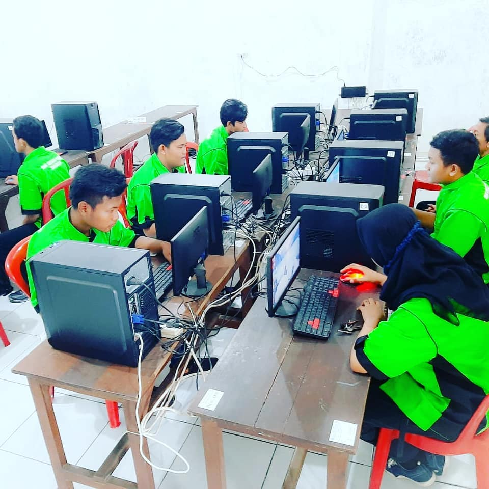

Desain Komunikasi Visual

Desain Komunikasi Visual
Jurusan Desain Komunikasi Visual (DKV) mempelajari seni menyampaikan pesan melalui elemen visual. Siswa dibekali keahlian desain grafis, fotografi, videografi, hingga ilustrasi digital menggunakan perangkat standar industri kreatif.
Lulusan DKV siap menjadi desainer profesional, content creator, dan praktisi industri kreatif di era digital. Pembelajaran berbasis project dengan portofolio yang siap ditunjukkan ke industri.
Daftar Jurusan DKVBidang keahlian yang akan dikuasai
Desain Grafis
Menguasai Adobe Photoshop, Illustrator, dan CorelDRAW untuk membuat poster, logo, dan materi branding.
Fotografi
Teknik fotografi produk, portrait, dan landscape dengan kamera DSLR dan pengaturan pencahayaan profesional.
Videografi & Editing
Produksi video mulai dari shooting, editing dengan Premiere Pro, hingga motion graphics dengan After Effects.
Ilustrasi Digital
Membuat ilustrasi karakter, komik, dan karya digital painting menggunakan tablet grafis dan software khusus.
Prospek Karir Lulusan DKV
Desainer Grafis
Fotografer
Videographer
Content Creator